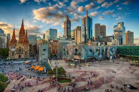
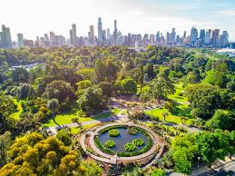
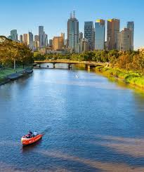
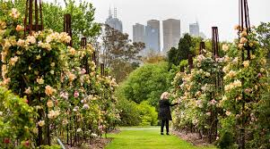
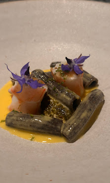
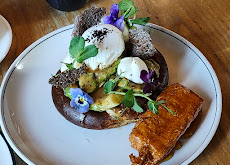

Melbourne é uma das cidades mais sustentáveis da Austrália, com políticas voltadas para energia limpa, transporte público eficiente e preservação de parques urbanos.

Federation Square, um dos pontos culturais mais importantes da cidade.

Royal Botanic Gardens com grandes áreas verdes e trilhas.

Yarra River Parklands com áreas naturais preservadas.

Jardins e parques urbanos integrados ao planejamento da cidade.

Restaurantes com culinária australiana moderna.

Restaurantes com ingredientes locais e produção sustentável.